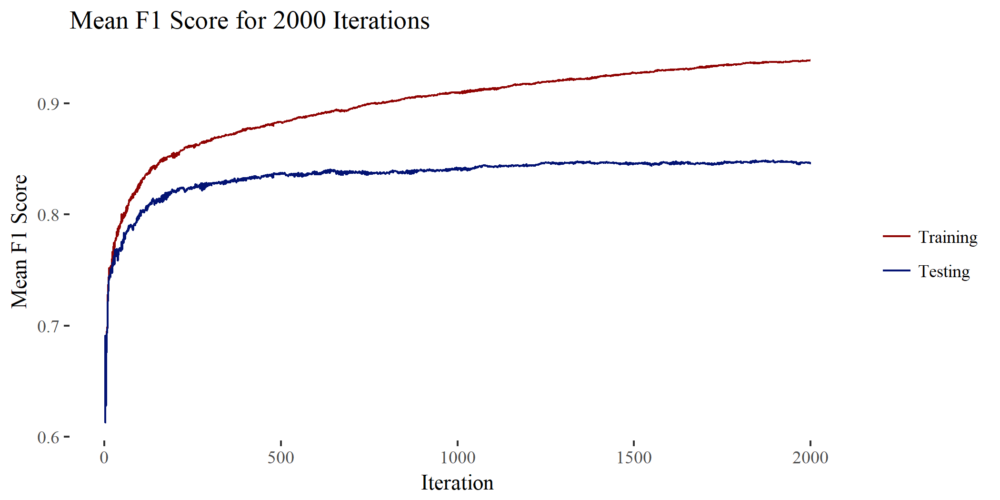
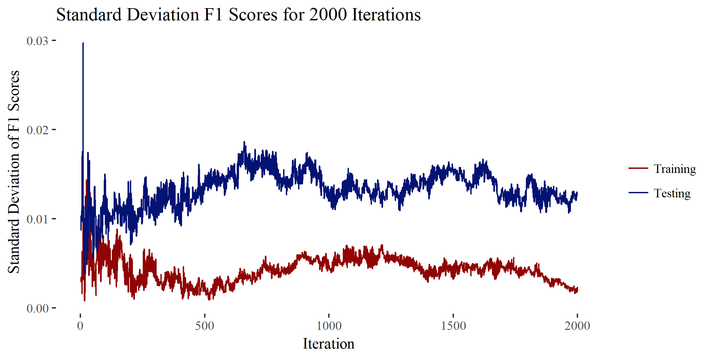

This project has two parts. The first part is the participation in a Kaggle competition as part of a machine learning course at The University of Utah in 2016. The second part is creating an R package called sboost that is an implementation of AdaBoost with decision stumps.
For the class Kaggle competition, I implemented six different machine learning algorithms on an android app system call dataset. The training data consisted of 7600 apps with records of number of system calls for 360 different types of system calls. The algorithms implemented were ID3, SVM, tree ensembles, Perceptron, and AdaBoost with decision stumps. I used cross validation to tune hyper-parameters for each. AdaBoost with decision stumps proved to be a good classifier for this set of data. The competition ended in December of 2016, the results of the competition can be seen here, and they are summarized at the bottom of the page.
The package sboost started as an exercise to learn how to integrate C++ with R and to learn how to build R packages. See my GitHub sboost repository for a code and installation instructions.
The sboost package uses AdaBoost to combine and improve the performance of weak classifiers called decision stumps. Decision stumps are classifiers that learns to classify a feature vector into one of two outcomes. Prior to running the algorithm, all categorical features are converted to integers, all instances of each feature are sorted in ascending order, and each instance is given equal weight. When finding a decision stump, each feature is analyzed separately.
For categorical features, the categories are separated into one of the two outcomes based on the weighted accuracy of instances within that category. For example, if for instances 1 to 9 a feature is [1, 1, 1, 2, 2, 2, 3, 3, 3] and outcomes are [1, 1, 1, -1, -1, 1, 1, 1, -1], then categories 1 and 3 will be predicted as 1 and category 2 will be predicted as -1. The overall accuracy for this stump will be 7/9 or 78% (assuming equal weight).
For each pair of sequential feature values (a and b) in a numerical feature, the accuracy for a division of the data at the point between the a and b is calculated. Given the example above, if that feature was numeric, the optimal division would be < 1.5 predicted as 1 and > 1.5 predicted as -1 with an overall accuracy of 6/9 or 67% (assuming an equal weight).
Whichever division of all features produced the greatest accuracy is chosen to be the decision stump for that round. AdaBoost is then implemented on the resulting weak classifier and the process is repeated with updated weights.
AdaBoost requires the weighted error, ε, of the best stump for a given round (weighted error = 1 - weighted accuracy). The amount of vote, α, for that stump in the final outcome is given by α = .5 * ln((1 - ε) / ε). Each of the weights, ω, is updated by ω = ω * exp(-α) for correct predictions and ω = ω * exp(α) for incorrect predictions. This results in weights that are scaled up for incorrect classification and scaled down for correct classification. These weights are used when training the next stump and the process is repeated for a specified number of iterations.
Returning to the competition, the following method was employed. Four fold cross validation was used to find the best number of iterations to use. Below are graphs displaying the results of this validation. The F1 scores of the training sets continually increased and the F1 scores on the testing sets remained at a fairly constant 85% with about 1% standard deviation. The classifier was consistently over fit to the training. I expected the error rate of the testing sets to eventually increase as training proceeded, however errors on the testing sets seemed to remain constant after a few hundred iterations. Any classifier made with over a thousand iterations on this algorithm would be a good candidate to submit for the competition.
 